L.A. Confidential
Main Content
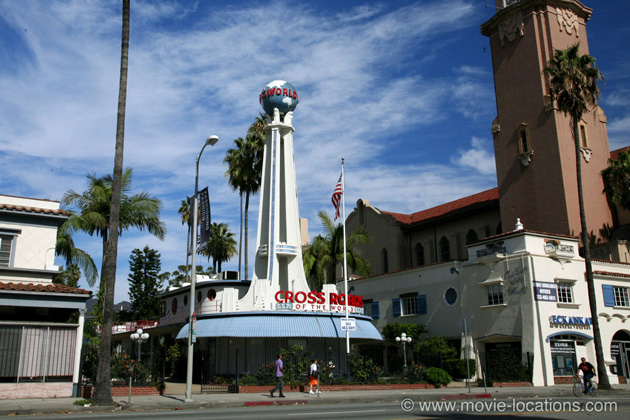
Discover the many and beguiling film locations for Curtis Hanson's classic neo-noir around Los Angeles, including the Lovell Health House; the Formosa Restaurant; the Crossroads of the World; Bob's Frolic Room; Gramercy Place; LA City Hall and Boardner's Bar. Now find out exactly where. ▶ With map of locations at end of entry.
James Ellroy’s 1990 novel, L.A. Confidential, was inspired by several real life events, including the gang warfare for control of the city’s rackets which erupted after mob boss Mickey Cohen was jailed, and ‘Bloody Christmas’ – the notorious reprisal beatings of a bunch of Hispanic prisoners by LAPD cops.
Along with Michael Mann’s Heat, Curtis Hanson’s Fifties-set adaptation shows the city of Los Angeles at its most darkly stylish and, although it’s a period piece, was shot almost entirely on real locations around the city.
Only the decrepit ‘Victory Motel’, the unofficial ‘enhanced interrogation’ base of corrupt police Captain Dudley Smith (James Cromwell) and site of the final shoot-out, is a purpose-built set, constructed in Baldwin Hills near Culver City, among the area's characteristic ‘nodding donkey’ oil wells.
Beneath the Hills lies the Inglewood Oil Field, discovered in 1924 beneath South Los Angeles, and the 18th-largest oil field in California. There are other oilfields in the city (including one beneath Beverly Hills) but these wells are often well hidden or disguised. Only around Baldwin Hills can you see acres of what are correctly called pumpjacks, looking like pterodactyls gently feeding their young, bringing up the fuel to keep LA’s relentless traffic moving.
Apart from the dozens of locations, there’s plenty of plot and numerous characters, centred around three very different LAPD officers: short-tempered, bull-headed Bud White (Russell Crowe) who displays a righteous fury when it comes to battered women; straight-as-a-die rookie Ed Exley (Guy Pearce), trying to live up to the awesome reputation of his not-so-straight detective father; and fame-hungry Jack Vincennes (Kevin Spacey) – dubiously claiming to be the guy who arrested Robert Mitchum – coasting along on the glamour of being advisor to TV series Badge Of Honor.
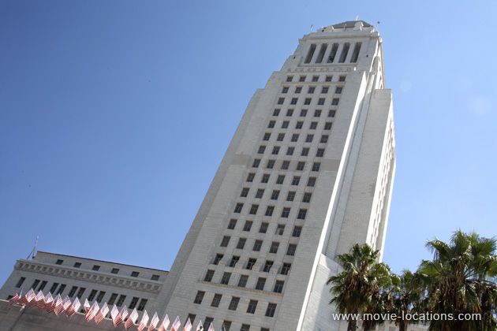
This fictitious TV show is obviously based on Dragnet and similarly uses Los Angeles City Hall, as seen on the LAPD badge, as its logo. The familiar pyramid-topped highrise, out of which the film’s cops appear to operate, can be seen at 200 North Spring Street, Downtown. If you've picture ID, you can take a trip up the the Observation Deck on the 27th Floor to get a panoramic view over the city.
The film doesn't use the interior of City Hall for the police HQ (though its Council Chamber is seen later in the film). In fact, the movie’s cop station is a mix of three separate locations.
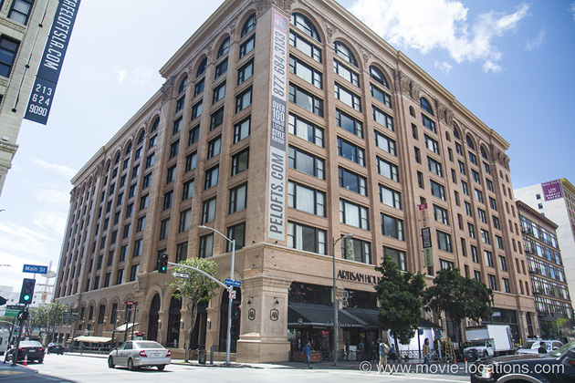
Most of the offices and corridors are those of the once-disused Pacific Electric Building, 610 South Main Street at 6th Street, Downtown LA, the former home of Henry E Huntington's trolley line which served Southern California for more than fifty years with its famous red cars.
The massive brick building has stood empty since 1989 when the former owners moved out, but is now being redeveloped as PE Lofts – luxury apartments, of course. The mosaic-tiled hallways, glass doors and transoms have featured in many films including David Fincher’s Se7en, John Woo’s Face/Off, Sam Raimi’s Spider-Man and Steven Soderbergh’s Traffic.
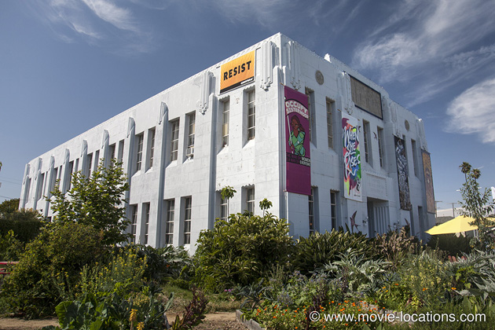
The cop station’s lobby and front desk are those of the Old Venice Police Station Division 14, 685 Venice Boulevard. Now housing SPARC, the Social and Public Art Resource Center, devoted to Los Angeles’s excellent tradition of multi-ethnic murals, the building was previously famous for supplying the exterior of ‘Anderson Police Precinct’ for John Carpenter’s 1976 Assault On Precinct 13. According to the ever-excellent LA-based site iamnotastalker.com, the disused police station has a long history as a movie location.
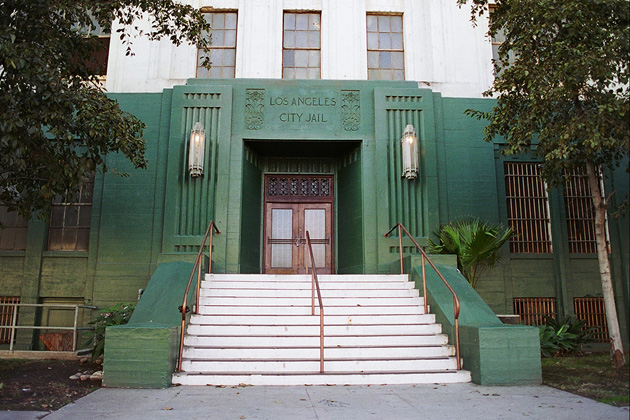
Lastly, the jail cells are another familiar location – the disused Lincoln Heights Jail, 401 North Avenue 19, Lincoln Heights, whose credits reach back to George Cukor’s 1954 A Star Is Born and include Wes Craven’s original A Nightmare On Elm Street among many others.
The scene-setting is narrated by Sid Hudgens (Danny DeVito), editor and seemingly sole reporter for gossip rag Hush Hush – “Off the record, on the QT and very Hush Hush!”.
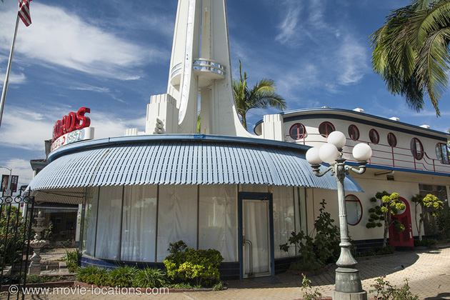
Sleazy he may be but his office is in the impeccably stylish Crossroads of the World, 6671 Sunset Boulevard in Hollywood, a glorious Thirties outdoor shopping mall disguised as a sleek ocean liner, complete with portholes, gliding into a European port. Its graceful spire capped with a ceaselessly revolving globe, the Crossroads now does house offices and was seen as the workplace of Diana Murphy (Demi Moore) in Adrian Lyne’s 1993 Indecent Proposal.
It’s Christmas Eve and Bud White energetically takes on a a case of domestic abuse, ripping the Santa Claus decorations from the roof of 4216 Rose Avenue in Long Beach to the far south of LA, a modest bungalow at the time of filming but since prettied up with multiple gable ends.
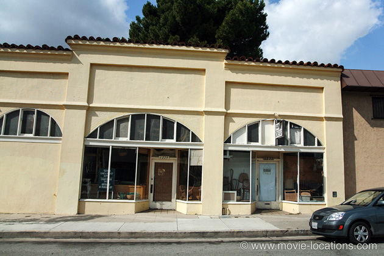
Calling into ’Nick’s Liquor Store’ for some seasonal cheer, White is taken aback by Veronica-Lake lookalike Lynn Bracken (Kim Basinger), who’s stocking up for ‘a helluva party’. This ‘liquor store’ is Ramon’s Cane Shop, 1277 South Cochran Avenue, south of South San Vicente Boulevard, Midtown, across from Cochran Avenue Baptist Church.
It’s outside the store that one of the main plot lines is set in motion when Bud – investigating a woman who appears to be nursing a broken nose – first encounters millionaire businessman Pierce Pratchett (David Strathairn) and his ex-cop bodyguard ‘Buzz’ Meeks. In classic film noir tradition, Lynn explains to White “It’s not what it seems.”
Part of the all-encompassing web of low-level corruption is the unhealthy relationship between Jack Vincennes and sleazemeister Hudgens. The journo tips off the cop about a little illicit weed usage, Vincennes makes the arrest and Hudgens is immediately on hand for that exclusive photo op.
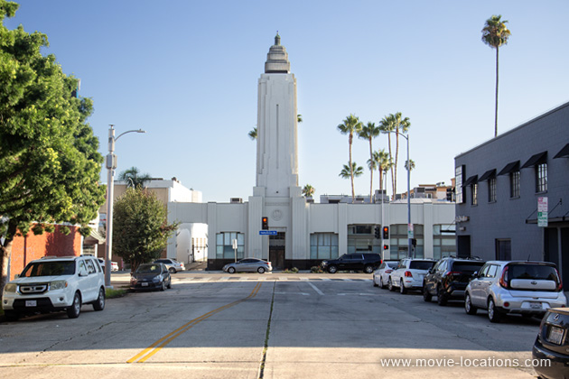
In this case, it’s ‘The Movie Premiere Pot Bust’, a gift to Hush Hush as hapless actor Matt Reynolds (Simon Baker) is hauled from the bungalow at 1714 North Gramercy Place, west of Western Avenue just off Hollywood Boulevard, with the impressive-looking ‘El Cortez’ theatre hosting the launch of 1951 sci-fi When Worlds Collide providing a suitably dramatic backdrop for the press photos.
Don’t bother trying to book seats at ‘El Cortez’. The imposing deco building is nothing more than the abandoned bank building at 5620 Hollywood Boulevard, decked out with a remarkably convincing cinema marquee.
In Reynolds' bungalow Vincennes discovers the card of the dubious ‘Fleur De Lis’ organisation (motto: “Whatever you desire”), which turns out to play a fundamental role in the city’s subculture.
Back at LAPD HQ, the the publication of press photos of the ‘Bloody Christmas’ beatings leads to a mighty furore which sees Bud White suspended for not snitching on his colleagues and the cooperative Ed Exley promoted for the opposite reason.
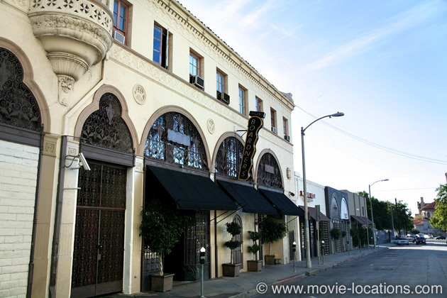
Captain Smith, ever on the lookout for strongarm backup, however, has a use for the heavyweight Bud White. As a result, he finds himself quickly reinstated. The bar in which Smith hands back White his badge and gun is Boardner’s, 1652 North Cherokee Avenue just off Hollywood Boulevard.
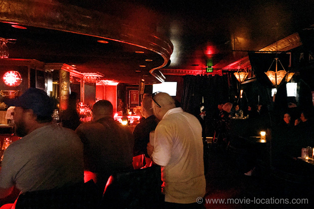
Boardner’s is a great little bar with a fascinating history dating back to the Thirties – and it’s my favourite bar in Hollywood. It’s also seen in Tim Burton’s Ed Wood and in Hollywood Homicide, with Harrison Ford and Josh Hartnett.
When I visited, the bar celebrated its cinematic connection with a range of movie-themed cocktails such as a Blade Runner (Bulleit Rye Whiskey, ginger beer and lime juice) or a Big Lebowski (Stoli Vanilla, Kahlua and cream served over ice), but I guess this changes.
When Mickey Cohen’s henchmen start dropping like flies, there’s clearly something sinister going down. Two of his goons are gunned down somewhere “near Sunset”. Well, quite a long way from Sunset, actually. They’re outside 4439 Victoria Park Drive, south of Mid-Wilshire and, if you’re on a location trip, this is only a couple of minutes away from the Lambert family home from James Wan’s 2010 Insidious.
There’s more bloodshed as Exley takes a homicide call and discovers the owner and six customers of the ’Nite Owl Coffee Shop’ bloodily murdered in a supposed robbery.
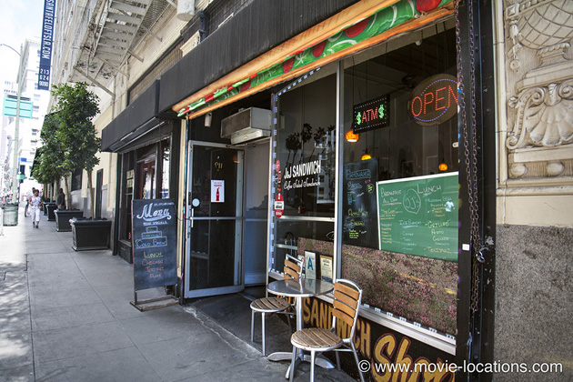
The ‘Nite Owl Cafe’ was the J&J Sandwich Shop, 119 East 6th Street, Downtown LA, and its interior was still instantly recognisable when I visited to take these photos in 2018. The bad news is, it has recently closed. Let's hope new owners retain the original interior.
This is a busy stretch of Sixth Street – next door to J&J is ‘Wild Bill’s tattoo parlour from Se7en, and the barbershop in which Detectives Somerset (Morgan Freeman) and Mills (Brad Pitt) wait for their contact to drop off the records in the same movie.
Opposite stands Cole’s, seen in Forrest Gump, which is housed in the basement of – yes, the Pacific Electric Building. And it’s on this stretch of Sixth Street, too, that there’s an incendiary attempt to free kingpin Alex Montel (Olivier Martinez) from the police convoy in F Gary Gray's 2003 S.W.A.T.
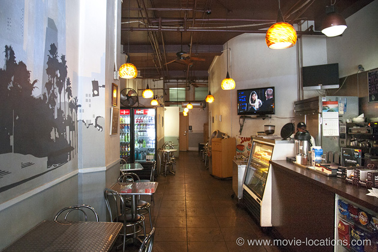
Since the Nite Owl victims include not only Bud White’s disgraced ex-partner but also Rita Hayworth lookalike Susan Lefferts – the woman with the bandaged face from outside the liquor store – suspicions are justifiably raised.
Following up a lead from the liquor store, Bud White is soon calling at the sleek terraced home of Pierce Patchett, which is architect Richard Neutra’s Lovell House.
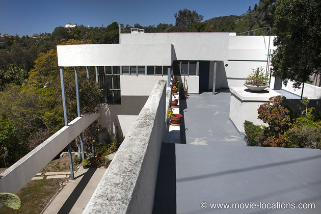
Looking amazingly modern, Neutra’s masterpiece was built in 1929 for physician and staunch vegetarian Philip Lovell (it’s also known as the Lovell Health House), a private residence at 4616 Dundee Drive, Los Feliz, below the Griffith Observatory, which you can clearly see on the skyline.
In 2010, the house became home to Hal Fields (Christopher Plummer) and his son Oliver (Ewan McGregor) in Mike Mills' drama Beginners.
Behind the respectable façade, Pratchett is the high-class pimp running ‘Fleur De Lis’, an organisation which specialises in supplying lookalikes of famous movie stars to wealthy clients.
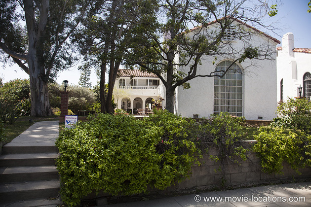
Via Pratchett, White finally manages to trace Lynn Bracken to her swanky home, 501 Wilcox Avenue, in the Rossmore district of LA. Bracken's luxurious 1927 house, alongside the Wilshire Country Club, indicates just how profitable Pratchett's racket it.
With pressure on to clear up the ‘Nite Owl Massacre’, three young black guys predictably end up in the frame. Eager to track them down, Vincennes and Exley offer a bogus promise to extract information from young boxer Leonard Bidwell (Robert Barry Fleming) as he hammers the punchball outside his house at 1255 Bellevue Avenue at East Kensington Road, in the Echo Park district.
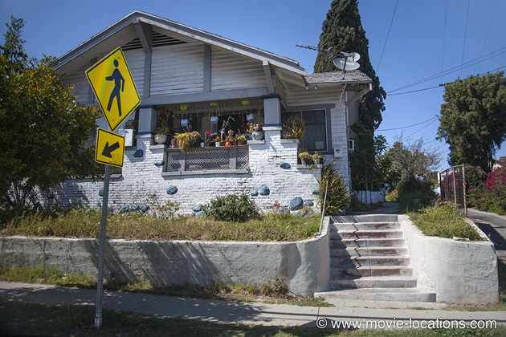
Watch the film closely and you’ll probably recognise Bob’s Market opposite, which became 'Toretto's' in the first Fast and the Furious movie.
In custody the three suspects are clearly hiding something, but it’s not what the cops are expecting. They’re holding captive and sexually abusing a woman a house on ‘Avalon Street, South Central”.
The house, from which she’s immediately rescued, is actually 496 East Avenue 28 on the southern junction of Montecito Street in Lincoln Heights, northeast of Downtown.
It's while the team is freeing her that all three suspects astonishingly manage to escape from police custody.
Tracked to the home of their dealer, Roland Navarette (supposedly on Downtown’s now-redeveloped ‘Bunker Hill’), they die in a hail of gunfire at 2618 San Marino Street near the intersection of Olympic Boulevard and Hoover Street, west of Macarthur Park.
Ed Exley is hailed as hero of the hour, awarded the Medal of Honor and the force closes the case, satisfied that justice has been done.
But bad stuff just keeps on happening. When an LA councilman is approached with a series of photos showing him enjoying the pleasure of Lynn Bracken/Veronica Lake’s company, he suddenly decides to change his vote on a real estate deal to favour none other than Pearce Pratchett.
The property debate really is held in City Hall Council Chamber, which you may remember from Roman Polanski’s Chinatown, and which obviously doesn’t mind being the centre of civic corruption onscreen – in period movies, of course.
There seem to be no depth’s to Pratchett’s depravity – at one of his decadent parties, he seems happy to be offering a Shirley Temple lookalike – but he does maintain impeccable taste in architecture.
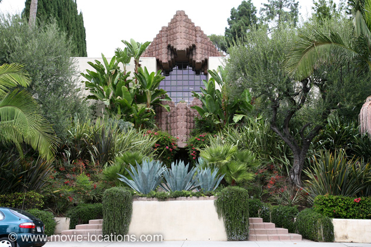
The backdrop to these debauched shenanigans is the 1926 Sowden House, 5121 Franklin Avenue, between Western and Normandie Avenues, in Los Feliz, east of Hollywood.
This astonishing design is the work of Lloyd Wright (son of innovative architect Frank Lloyd Wright) and you can see again it as the home of Ava Gardner (Kate Beckinsale) in Martin Scorsese's Howard Hughes biopic The Aviator.
Back in Tinseltown, Hudgens and Vincennes are plotting to set up naive young Matt once again, this time for an assignation with ‘secret swish’ District Attorney Loew (Ron Rifkin) on the promise of a role in Badge of Honor.
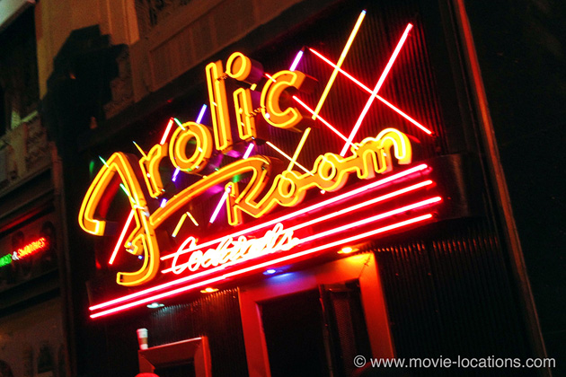
This finally is a step too far even for Vincennes who has a crisis of conscience as he nurses a drink in Bob’s Frolic Room, 6245 Hollywood Boulevard, a surviving small Thirties neon-fronted dive bar alongside the Pantages Theater. It's a small, lively and often busy little dive bar, its walls decorated with stylish Al Hirschfield cartoons of Hollywood greats.
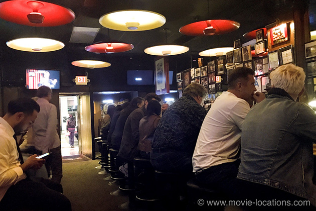
Opened as a speakeasy in 1934 – allegedly by one Freddy Frolic (hmmm...) – the bar stakes out its cool credentials with a portrait of one-time regular, writer Charles Bukowski, hanging above the cash register. It's in front of the Frolic that Rick Dalton (Leonardo DiCaprio) gets one too many drunk driving tickets in Quentin Tarantino's Once Upon A Time In Hollywood and it's from outside the bar that 'Shannon' is stolen in Dominic Sena's 2000 remake of Gone In 60 Seconds, with Nicolas Cage.
Leaving Hudgens’ $50 payola as a generous tip for the bartender, Vincennes sets off to warn the actor.
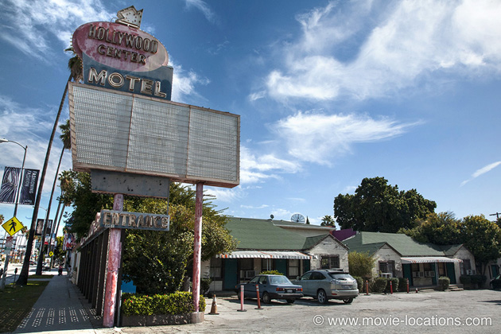
He’s too late, finding Reynolds dead in a pool of blood inside room 203 of the Hollywood Center Motel, 6720 Sunset Boulevard. An original 20s motel, enlarged in the 1950s, the decrepit Hollywood Center seems more a place to look at than stay and, indeed, as of 2018, it does seem to be closed down. Let’s hope it gets returned to its period glory and doesn’t get bulldozed to make way for one more anonymous concrete box.
Yet another body is discovered when Bud White decides to pay a visit to Mrs Lefferts – mother of the murdered Rita Hayworth lookalike – only to discover that the smell emanating from her crawl space comes from the mortal remains of Pratchett’s bodyguard, Meeks. Mrs Lefferts' house is 1704 Morton Avenue, northeast of Echo Park.
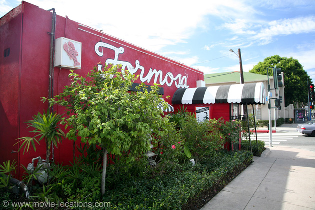
By now everyone suspects everyone else and Exley recruits the aid of Vincennes to tail Bud White to the Formosa Cafe in West Hollywood. White is extracting information from tough guy Johnny Stompanato and it’s here that he and Exley later have an embarrassing confrontation with Stompanato and – oops! – the real Lana Turner.
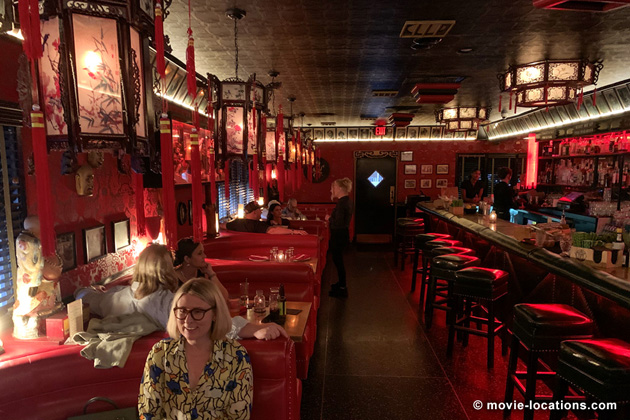
A Chinese restaurant and bar housed in an old railroad car and festooned with celebrity photos, the Formosa Cafe, 7156 Santa Monica Boulevard at Formosa Avenue, was a regular hangout for the likes of Humphrey Bogart, Marilyn Monroe and Clark Gable, among others since it stood just over the road from the old Goldwyn Studios, known as ‘The Lot’, and functioned as something of an unofficial staff canteen.
A few years ago, the restaurant closed and came close to being demolished. A campaign to save it as a historic site resulted in the premises being bought with a view to renovation and reopening. In April 2018, it stood in a sorry state of disrepair but I'm happy to report it's back with a vengeance and better than ever. I checked it out recently and was impressed by its rejuvenation. And yes, the frieze of celeb photos remains.
You can see the Formosa again in Frank Darabont’s 2001 Hollywood blacklist drama The Majestic, with Jim Carrey and Martin Landau.
The real Johnny Stompanato, by the way, was the underworld hood stabbed to death in the bedroom of Lana Turner’s Beverly Hills mansion in 1958 – allegedly by the actress’s daughter, Cheryl Crane.
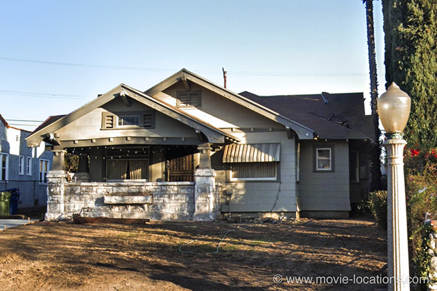
Putting the pieces together – though unfortunately not quite enough of them – Jack Vincennes visits Dudley Smith in the middle of the night at his craftsman bungalow, 5668 Berkshire Drive, just south of Kendall Avenue in South Pasadena. Big mistake. Fatal, in fact.
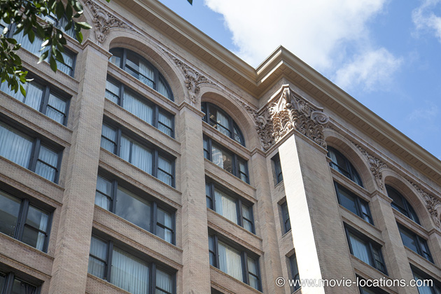
With Vincennes out of the picture, Exley has no choice but to settle his differences and team up with Bud White. Together they put pressure on the corrupt DA Loew. The top-floor window, from which the terrified man is dangled by Bud White as an incentive to cooperate, is once again the Pacific Electric Building, on the Sixth Street side – coincidentally, directly overlooking the location for the ‘Nite Owl Coffee Shop’.
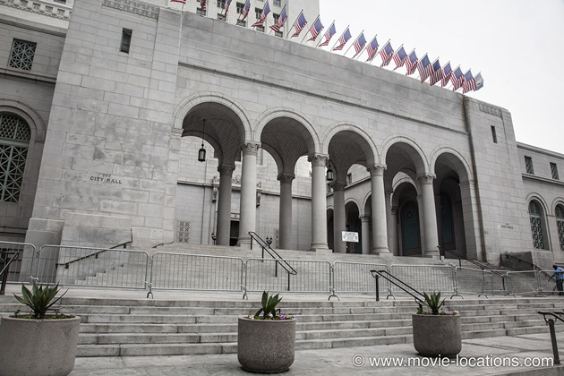
With the DA onside, the convoluted conspiracy can finally be unpicked, though not without that noisy shoot out at the ‘Victory Motel’ and a substantial increase in the body count.
There’s a resolution of sorts, with Bud White and Lynn Bracken taking their leave of Ed Exley and driving away from the steps of the grand ceremonial entrance of LA City Hall on North Spring Street.
Visit Info
Visit The Film Locations
California | Los Angeles
Visit: Los Angeles
Flights: Los Angeles International Airport (LAX), 1 World Way, Los Angeles, CA 90045 (tel: 424.646.5252)
Travelling around: Los Angeles Metro
Drink at: Boardner’s by La Belle, 1652 North Cherokee Avenue, Hollywood, Los Angeles, CA 90028 (tel: 323.462.9621)
Dine at: the Formosa Cafe, 7156 Santa Monica Boulevard, West Hollywood, Los Angeles, CA 90046 (tel: 323.850.1014)
Drink at: Bob's Frolic Room, 6245 Hollywood Boulevard, Los Angeles, CA 90028 (tel: 323.462.5890)